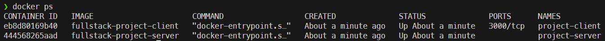

Docker
If you have already created projects locally, skip down to the Remove Node Modules section below. You can Dockerize existing projects as well!
Get Effective IDs
First, we need to make a note of our effective user ID and group ID in the terminal:
# Terminal
id
You should get output that begins with something similar to this:
uid=1000(youboon2) gid=1000(youboon2)
Remember those two numbers for later!
Create Projects
To create the projects themselves, we’re going to use a one-off Docker command to run a container.
# Terminal
docker run --rm -it -v `pwd`/:/app node:18 bash
Make sure you run this command in the root directory of your project!
In this command:
docker runwill start a container to run a command. The container is removed when the command is finished.--rmwill remove the container when it is finished-itwill provide an interactive terminal-v `pwd`/:/app</code>will create a volume mount between the current directory and the/appdirectory in the container.- Backticks around a command in the terminal will use the result of that command in the outer command. You could instead enter the full path to the current directory as part of the command, as in
-v /home/user/projects/fullstack:/app/code. - See Docker Volumes for more details.
- Backticks around a command in the terminal will use the result of that command in the outer command. You could instead enter the full path to the current directory as part of the command, as in
node:18is the name of the Docker image to run.- Refer to Node on DockerHub for other image versions. At the time of writing, Node 18 is the current LTS version.
bashwill load the Bash terminal inside of the container
Refer to the Docker run documentation for more details.
Once we have run that command, we should get a terminal inside of the container:

To create the projects, we are going to use Express Application Generator and Create React App. You can refer to those pages for additional options that you can use when creating these projects.
# Docker Container Terminal
npx express-generator -v ejs /app/server
npx create-react-app /app/client
Next, we are going to set the owner and gorup of these files to match the effective user and group IDs of the host system outside of Docker. This allows us to maintain and modify the files in Visual Studio Code.
# Docker Container Terminal
chown -R 1000:1000 /app/*
Modify the command above to match your IDs found earlier. The first one is the user Id and the second is the group ID.
Hopefully this highlights one of the major security concerns from using Docker volume mounts. The files are originally owned by the root user, but since Docker runs as root by default, we can use commands within a container to change file permissions that we may not be able to change outside of the container. In an enterprise setting, this means that anyone who can start Docker containers can in theory change these permissions.
Once we are done, we can exit the container:
# Docker Container Terminal
exit
This will stop the container and remove it.
Remove Node Modules
Finally, we want to remove the node_modules folders from both the client and server folders. These are created when the project is first initialized, but we don’t want them outside of our actual containers. So, DELETE both node_modules folders!
Configure Docker
Now let’s configure Docker to allow us to load both projects in separate Docker containers.
Create a docker-compose.yml file in the root directory of the project with the following content:
# docker-compose.yml
services:
# server
project-server:
build:
# location of Dockerfile
context: ./server
container_name: project-server
networks:
- project-network
volumes:
# mount code into container
- ./server:/app/server
# maintain existing node_modules in container
- /app/server/node_modules
# client
project-client:
build:
# location of Dockerfile
context: ./client
container_name: project-client
depends_on:
# requires server to start
- project-server
networks:
- project-network
# allow external connections
- default
volumes:
# mount code into container
- ./client:/app/client
# maintain existing node_modules in container
- /app/client/node_modules
networks:
# internal Docker network for project
project-network:
name: project-network
internal: true
Refer to Docker Compose File Reference for what this does.
We’ll also need to add a Dockerfile to each project:
# client/Dockerfile
# For running in development mode only
FROM node:18
WORKDIR /app/client
COPY package*.json ./
RUN npm install
EXPOSE 3000
CMD ["npm", "start"]
# server/Dockerfile
# For running in development mode only
FROM node:18
WORKDIR /app/server
COPY package*.json ./
RUN npm install
EXPOSE 3000
CMD ["npm", "start"]
Refer to Dockerfile Reference for the structure of these files.
Finally, we can start and run the Docker containers using Docker Compose:
# Terminal
docker compose up -d
Refer to the Docker Compose CLI Reference for how to use Docker Compose commands.
It will take a bit to build and configure both containers, but eventually the command should finish. This will be faster in the future. You can confirm they are running using the docker ps command.

To stop the containers when you are done, use
# Terminal
docker compose down
Commit
This is a great place to stop and commit your work to GitHub.